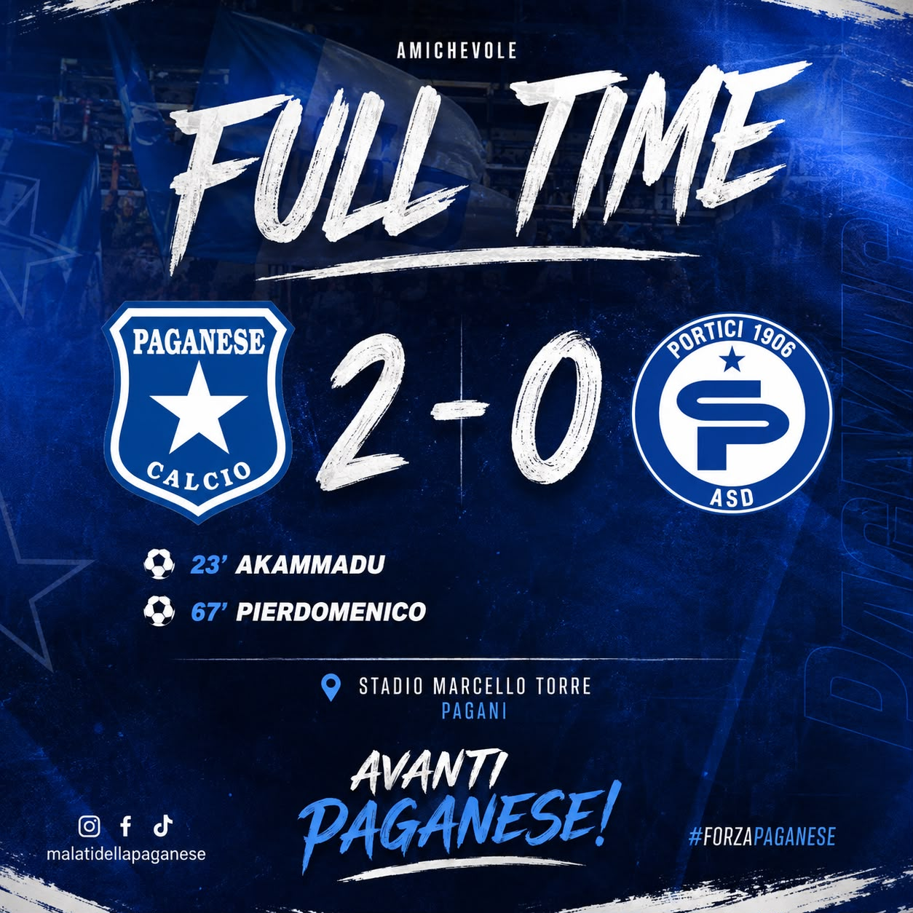

🤝 Amichevole · FULL TIME
⏱️ FULL TIME | PAGANESE 2-0 PORTICI 💙⭐
22 agosto 2026 · Stadio Marcello Torre · Pagani

AMICHEVOLE
PAGANESE 2-0 PORTICI
⚽ Akammadu
⚽ Pierdomenico
⚽ Pierdomenico
⏱️ FULL TIME | PAGANESE 2-0 PORTICI 💙⭐
Finisce al Marcello Torre! La Paganese supera il Portici per 2-0 nell’amichevole di oggi.
⚽ AKAMMADU
⚽ PIERDOMENICO
⚽ PIERDOMENICO
Un’altra buona prova per gli azzurrostellati, che continuano la preparazione in vista dei primi impegni ufficiali. 💪
AVANTI PAGANESE! 💙⭐
#Paganese #PaganeseCalcio #MalatiDellaPaganese #ForzaPaganese #Azzurrostellati
← Torna alle News